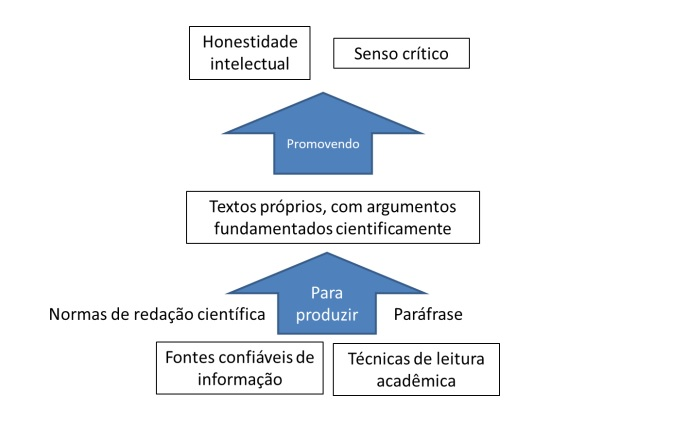
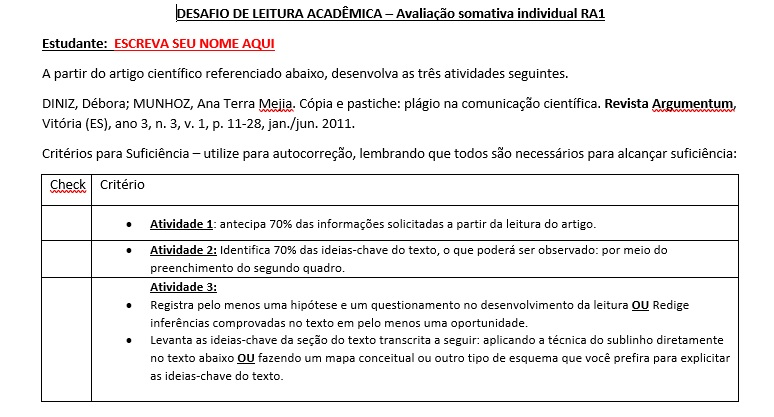
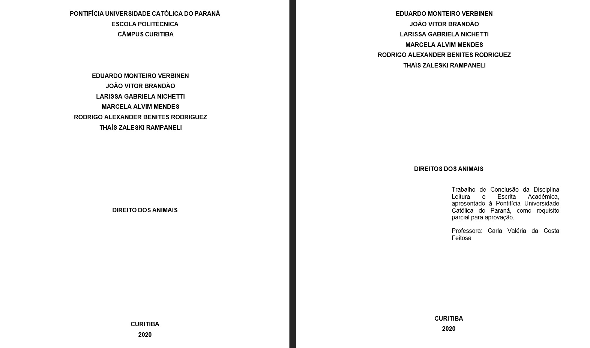

Leitura e Escrita Acadêmica
|
Ministrado por Me. Carla Valéria Feitosa, esta disciplina, comum a cursos por competência da PUCPR, aborda aspectos da leitura e da escrita acadêmicas, e pode ser o primeiro contato do estudante com artigos científicos. Nela, os estudantes identificam fontes confiáveis de informação e aplicam técnicas de leitura acadêmica, as quais subsidiam o processo de interpretação textual e permitem selecionar ideias-chave, auxiliando na elaboração de paráfrases. Ao final, o acadêmico é capaz de produzir revisões autorais de literatura científica conforme normas da ABNT. |
 |
|
Projetos Realizados |
|
|  |
A primeira atividade foi sobre o assunto Cópias e Pastiche. Nela aprendemos a diferenciar esses dois termos, e posteriormente tivemos de completar campos de uma tabela com a respectiva interpretação do texto pedida. |
|
O segundo e terceiro projeto proposto foi escolher um tema dentre uma lista que foi disponibilizada, e posteriormente fazer pesquisas em fontes acadêmicas a respeito do assunto. Minha equipe nesse projeto foi composta por indivíduos de outras turmas, pois essa matéria visava integrar os estudantes entre si. Após selecionar as fontes e formular um texto com base nas informações coletadas, tivemos de transformar os dados abstraidos em um documento acadêmico. |
 |

Copyright © 2020 by Eduardo Verbinen